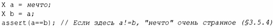
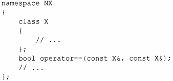

⇐5.4 Обычные операции Содержание 5.4.2 Операции с контейнерами⇒
Смысл сравнения на равенство(== и !=)тесно связан с копированием. После копирования копии должны рассматриваться как равные (эквивалентные) объекты:
Одновременно с == определите также != и убедитесь, что а!=Ь означает ! (а==Ь).
Аналогично, если вы определяете оператор <, то определите также операторы <=, >, >= и убедитесь в выполнении обычных тождеств:
Чтобы оба операнда бинарного оператора трактовались одинаково, его лучше всего определить как свободную функцию в пространстве имен соответствующего класса. Например:
